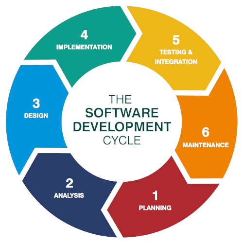

Software development methodologies overview
Software development methodologies are structured approaches to planning, executing, and managing software projects. They provide frameworks for teams to follow, ensuring that projects are completed efficiently and effectively.
Agile
Agile is a flexible and iterative software development methodology focused on delivering value to the customer quickly and adapting to changing requirements. Instead of building the entire product before release, Agile promotes working in small, incremental steps known as iterations or sprints (typically 1–4 weeks). Agile encourages regular feedback, collaboration between cross-functional teams, and continuous improvement.
Key principles of Agile include:
- Customer collaboration over contract negotiation.
- Responding to change over following a plan.
- Working software over comprehensive documentation.
- Individuals and interactions over processes and tools.
Example: A startup building a mobile app releases a new version every two weeks, each adding small features based on user feedback.
Scrum
Scrum is a specific framework within Agile. It structures work into fixed-length iterations called sprints, typically lasting 2–4 weeks. During each sprint, a self-organizing team works on a defined set of tasks from a backlog (a list of the features for the software in a prioritized list), aiming to deliver a potentially shippable product increment. When a feature gets close to the top of the priority list, it gets broken down into smaller tasks called user stories. A story should be small enough that a single team can finish it within a single sprint. Every day, each scrum team should have a daily stand-up. A stand-up is a meeting that should last no longer than 15 minutes and should take place at the same time every day. Scrum includes defined roles and ceremonies.
Key components of Scrum:
- Roles: Product Owner, Scrum Master, Development Team.
- Events: Sprint Planning, Daily Stand-up, Sprint Review, Sprint Retrospective.
- Artifacts: Product Backlog, Sprint Backlog, Increment.
Example: A software team holds daily stand-ups and delivers a tested login system at the end of a 2-week sprint.
Kanban
Kanban is another Agile-based methodology focused on visualizing work and optimizing flow. It uses a Kanban board divided into columns (e.g., To Do, In Progress, Done) to represent work stages. Each task is a card that moves across the board. Kanban limits the number of tasks in progress (WIP) to avoid overload and ensure steady delivery.
Benefits of Kanban:
- Flexibility - no fixed iterations.
- Better visibility of work status.
- Focus on continuous delivery.
Example: A customer support team uses a Kanban board to manage incoming tickets, ensuring no more than three are handled simultaneously.
Lean
Lean is a methodology that originated in manufacturing (Toyota Production System) and later adapted to software development. It focuses on maximizing value by eliminating waste (any activity not adding value to the customer). Lean emphasizes efficiency, fast delivery, and continuous learning.
Key Lean principles:
- Eliminate waste - remove any activity that does not add value to the customer.
- Amplify learning - encourage feedback and continuous improvement through small, frequent releases.
- Decide as late as possible - delay decisions until they are based on facts, not assumptions.
- Deliver as fast as possible - shorten delivery cycles to get feedback and value sooner.
- Empower the team - give teams autonomy and trust to make decisions.
- Build integrity in - ensure quality is part of the process, not something added later.
- Optimize the whole - improve the entire system, not just individual parts.
Example: A development team avoids over-documenting and focuses only on building features that solve real customer problems.
Waterfall
Waterfall is a traditional, linear software development methodology in which each phase is completed before moving on to the next. These phases are collectively known as the Software Development Life Cycle (SDLC), which outlines the stages involved in developing software applications. Waterfall is best suited for projects with well-defined requirements and minimal expected changes. You can imagine each stage as a single cascade in a waterfall - flowing sequentially and without turning back. Once a phase is completed, the process moves forward, and revisiting previous stages is typically not allowed.
Example: A government agency commissions a software system with fixed requirements, using Waterfall to deliver the final product after 12 months of planned work.
Different software development approaches
Test-Driven Development (TDD)
Test-Driven Development is a software development approach in which tests are written before the actual code. Developers first define the desired functionality through tests, then write code to pass those tests. TDD ensures that the software is robust, maintainable, and less prone to bugs, because all features are verified continuously. It promotes simple design and encourages developers to think carefully about requirements before implementation.
Extreme Programming (XP)
Extreme Programming is an agile software development methodology that emphasizes frequent releases, continuous feedback, and close collaboration between developers and customers. XP focuses on best practices such as pair programming, test-driven development, and simple design to improve code quality and adaptability to changing requirements. The approach encourages short development cycles and constant communication to ensure that the software meets the user’s needs effectively.
Intelligent Programming
Intelligent Programming is an approach that incorporates automation, AI, and advanced tools to assist developers in writing, testing, and maintaining code. This approach focuses on improving developer productivity by leveraging intelligent code suggestions, automatic error detection, and adaptive algorithms that can optimize code structure or detect potential bugs before execution. It’s often combined with other development methodologies to make the development process more efficient.
Feature-Driven Development (FDD)
Feature-Driven Development is an iterative and model-driven agile process that organizes development around features. A “feature” is a small, client-valued function, and FDD emphasizes planning, designing, and building features incrementally. This approach improves project visibility, ensures steady progress, and keeps the team focused on delivering tangible results regularly.